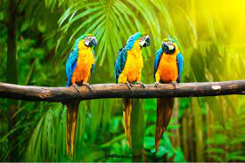
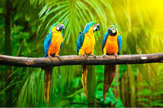
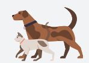
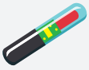

Registra Tu Mascota
Requisitos
Las Especies
Los animales a registrar deben ser perros o gatos. El registro de estos animales se realiza a partir de los dos meses de edad.
Clave Unica
Para solicitar la inscripción en el portal ciudadano, debes obtener tu clave única del Registro Civil. Para saber cómo adquirirla visita la página https://claveunica.gob.cl/

Calidad Del Responsable
El responsable del animal es quien debe registrarlo. Para demostrar que eres dueño o poseedor del animal, deberás tener un documento que lo compruebe. Los documentos que puedes usar son: boleta de compra, certificado de trasferencia, certificado de adopción, certificado de pedigree, declaración simple y declaración jurada simple u otro, donde se individualice al animal al menos con los siguientes datos: especie, sexo, raza, color, fecha de nacimiento o edad estimada, y cualquier otro dato que sirva para la identificación del animal. (Si no tienes alguno de estos documetos, descarga en esta página la declaración simple y complétala).

La Restricción
No podrán registrar animales de compañía personas que hayan sido sancionados con la inhabilidad absoluta y perpetua para la tenencia de animales
El Microchip
Tu mascota debe tener implantado bajo la piel un microchip, el cual debe cumplir con la norma ISO 11784, es decir tener un número único de 15 dígitos.
La Residencia
El registro se debe solicitar en la Municipalidad correspondiente a la comuna de residencia de tu mascota. Si tu mascota vive contigo, será en tu comuna de residencia.
Identificacion Animal
Los datos de tu mascota deben ser validados por un Médico Veterinario, a través de un documento, donde este profesional incorpore su nombre, cédula de identidad y firma. Los datos del animal que debe acreditar son: - Nombre del animal - Número de microchip - Especie - Sexo - Raza - Color - Edad mediante su fecha de nacimiento real o estimada - Estado reproductivo Puedes presentar distintos documentos que contegan la información solicitada, tales como: certificado de implantación de microchip, ficha del programa de esterilización municipal, certificado de vacuna antirrábica, carnet sanitario, certificado veterinario, certificado de pedigree u otro. (Si tu mascota aún no ha sido identificada, puedes descargar en esta página el comprobante de microchip y solicitar al Médico Veterinario que lo complete cuando le implante el microchip a tu animal)